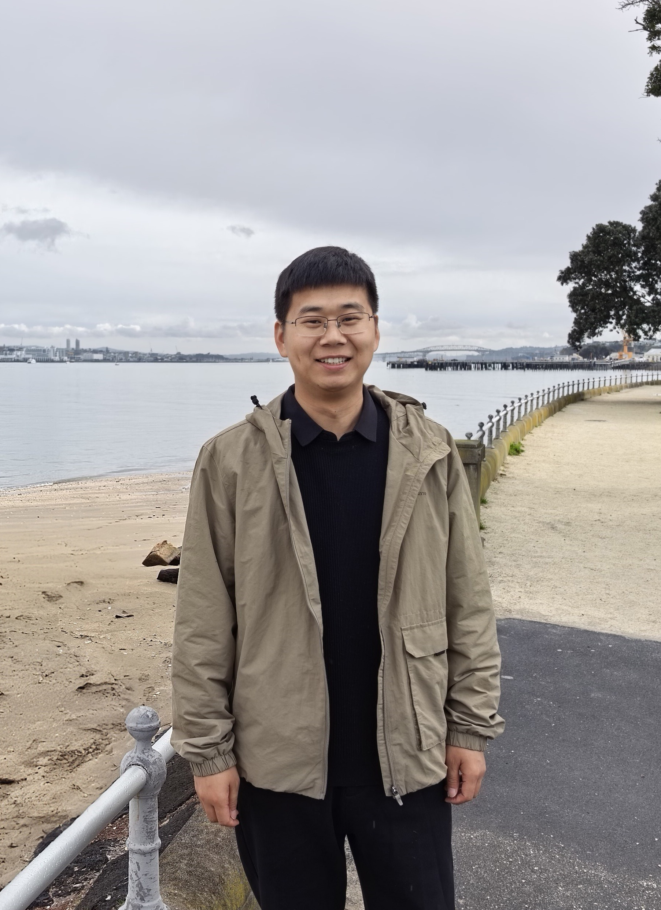

Academic profile
Xingzhao Guo 郭兴召
Master’s Supervisor · School of Mechanical and Power Engineering
Zhengzhou University
Guo Xingzhao is a Master’s Supervisor whose research focuses on rehabilitation engineering, intelligent robotics, and pattern recognition. He has published more than ten SCI/EI/core-indexed papers in international journals and conferences, including IEEE/ASME TMECH and IEEE TBME; applied for or received more than ten national invention patents; and developed one group standard. He leads national and provincial research projects, including an NSFC Young Scientists Fund project (Category C) and the Henan Young Talent Support Program, and has contributed as a key team member to national and provincial projects, including the National Key R&D Program of China and the Henan Provincial Key R&D Program. He received the Second Prize of the Science and Technology Progress Award from the China General Chamber of Commerce. As the primary supervisor, he has guided four undergraduates whose theses or design projects were recognized as Outstanding Undergraduate Theses (Designs) by Zhengzhou University. He has also supervised students who won more than 20 national and provincial awards, including national first prizes in the Chinese College Students Mechanical Engineering Innovation and Creativity Competition and the 7th Mingshi Cup Micro/Nano Sensing Technology and Intelligent Applications Competition, as well as a gold award in the 15th Challenge Cup Henan Provincial College Students Entrepreneurship Competition. He was recognized as an Advanced Individual for Excellence in Education at Zhengzhou University. He serves as a member of the Robot System Simulation Committee of the China Simulation Federation and the Medical–Engineering Integration and Minimally Invasive Orthopaedics Committee of the Henan Physical Medicine Society.
Research Interests
Rehabilitation Robotics and Human–Robot Interaction, Intelligent Robot Perception and Control, Brain–Computer Interfaces and Pattern Recognition, Biomechanics and Movement Assessment
Academic path
Education & Experience
Education
Experience
Research Work
Representative Research
Recent scholarship
Selected Publications
Updates